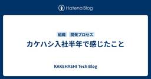
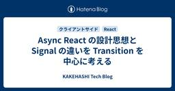

KAKEHASHI Tech Blog
https://kakehashi-dev.hatenablog.com/
カケハシのEngineer Teamによるブログです。
フィード

カケハシ入社半年で感じたこと
KAKEHASHI Tech Blog
はじめに はじめまして、竹浪と申します。2025年8月にカケハシへエンジニアとして入社しました。 現在は Pocket Musubi チームに所属しています。この記事では、入社の経緯や、半年間で感じたことをお伝えできればと思います。 自己紹介・これまでの経歴 1999年に専門学校を卒業後、SI系の会社でエンジニアとしてのキャリアをスタートしました。翌年にはフリーランスに転向し、その後メガベンチャーを含むWeb企業を経て、複数のスタートアップでの開発にも携わってきました。 技術スタックとしては Go、Java、PHP を中心としたバックエンド開発が主軸で、AWS や GCP を活用したインフラの…
3日前

Async React の設計思想と Signal の違いを Transition を中心に考える 29
29
KAKEHASHI Tech Blog
ランキング参加中プログラミング こんにちは。フロントエンドエンジニアをしているNokogiri（@nkgrnkgr）です。 はじめに 私たちのReactをつかったプロダクトでは Suspense をデータフェッチに利用しています。useTransition や useOptimistic も触ったことはありましたが、プロダクションでどう活かすかという解像度がまだ上がっていませんでした。 そんなとき、uhyo さんの「React 19時代のコンポーネント設計ベストプラクティス」や「Async Reactとは何か」を読んで、Async React の全体像をちゃんと理解したくなりました。実際にコー…
5日前

フルリモートチームで感じた違和感を、システムコーチングでほどいていく
KAKEHASHI Tech Blog
はじめに こんにちは、Musubi機能開発チームの北川です。 フルリモートでチームを運営していると、大きな問題はなくコミュニケーションも回っている。 それでも、本当に踏み込んだ議論ができているのだろうか、と感じることはないでしょうか。 私自身、スプリントプランニングやレトロスペクティブを実施し、メンバーとの1on1も定期的に行っています。それでも、この問いに対してはっきりと「できている」と言い切ることができませんでした。 議論が発散して場に沈黙が生まれると、進行役として場が止まらないよう、つい無理に結論づけてしまったり、曖昧なまま次の話題に進めてしまうこともありました。 そんな違和感をEM（@…
10日前
デザインの現在地
KAKEHASHI Tech Blog
はじめに こんにちは、カケハシの生成AI研究開発チームとMusubi Insightチームにてデザイナーをしている堤です。 最近、X界隈では「Figma不要論」といった過激な言葉も飛び交うなど、UIデザインのプロセスが大きな転換期を迎えています。2026年3月現在、私自身のワークフローを振り返ってみても、ほぼ全てのプロトタイピングをコードで行うようになっています。正直なところ、新しいコンポーネントの細かな調整以外でFigmaを開く時間は、以前に比べて劇的に減りました。 この記事は、デザインプロセスの変化について社内のLT会で共有した資料を交えつつ、いちデザイナーとして感じている現場感をまとめた…
12日前
LLMが生成したテストの品質をMutation Testingで検証する
KAKEHASHI Tech Blog
ランキング参加中プログラミング はじめに 「このファイルのテストを書いて」とLLMに依頼すれば、それらしいテストコードが秒で生成される時代になりました。しかし、生成されたテストが本当に役に立つかどうかは別問題です。 コードカバレッジが100%でも、アサーションが甘いかもしれない 重要な分岐をテストしていないかもしれない 人間がレビューしても、網羅性の判断は難しい 本記事では、Mutation Testingを使ってLLM生成テストの品質を定量的に評価し、改善するワークフローを紹介します。 Mutation Testingとは コードを意図的に壊し（ミュータント）、テストがその変更を検出できるか…
13日前
2025年に社内で話題になったフロントエンド技術トピックを振り返る
KAKEHASHI Tech Blog
こんにちは。AI在庫管理のプロダクト開発をしているソフトウェアエンジニアの大村です。 本記事では2025年にカケハシ社内で話題になったフロントエンド関連の技術トピックをピックアップしながら、昨年を振り返っていきます。 主要なライブラリ / フレームワークのアップデート React 19.2 (2025年10月) React19.2 React 19.2がリリースされ、ActivityコンポーネントやuseEffectEventフックなどの便利な機能が追加されました。 Activity Activityは、コンポーネントの表示・非表示をプロパティによって切り替えられる仕組みです。 これまで、コン…
17日前
E2EテストをSaaSからPlaywrightへ移行する
KAKEHASHI Tech Blog
はじめに こんにちは。Musubi Insightチームでエンジニアをしている中村です。 Musubi Insightでは、SaaS型のE2Eテストツール mabl で14のテストを運用していましたが、認証の安定性やコード管理の面でいくつか課題がありました。 昨今のフロントエンド開発では Claude Code などのAIエージェントと Playwright MCP を組み合わせ、コード修正から動作確認までをPlaywrightベースで回すワークフローが選択肢として広がりつつあります。こうした背景もあり、チームでPlaywrightへの移行を進めることになりました。 本記事では、移行にあたって…
24日前
多言語横断開発の現場から「Python と static duck typing」
KAKEHASHI Tech Blog
長い前置き おはようございます。カケハシのPE新規サービス開発チームというところでソフトウェアエンジニアをやっているogijunこと荻野です。最近この技術ブログはAIの話題が多めなので、ここから言語オタク語りが始まってしまうのはいいのか？とか思いますが、かまわず書きたいと思います。 前置きとして、わたしたちのチームではその名の通り新規事業のプロトタイプをよくやってます。その際には、なるべくサクサク実装して仮説検証を短いサイクルで回すために、社内の既にあるいろいろなプロダクト基盤を間借りしながら機能追加をさせてもらって実験を繰り返しています。 なので、気がつくと多数あるカケハシプロダクトの統一さ…
25日前
AIプロダクト開発における AI Tech PdM の５つの責任範囲
KAKEHASHI Tech Blog
はじめに こんにちは。カケハシで生成AIプロダクトの Product Lead/PdM をしている高梨です。 つい最近、我々のチームにAI技術に特化した AI Tech PdM がJOINしてくれました！！ 迎え入れた経緯や詳細な理由をここで細かく語ることはできないのですが、端的に言えば、急速に進化する生成AIを複数機能としてプロダクトに組み込むにあたり、プロダクトを持続可能な形で開発するためには、実現技術とAIの精度に責任を持つ人材が必要不可欠と考えたためです。 この記事は、我々のチームにおける（我々が開発しているAIプロダクト開発における）PdM と Tech PdM の役割の違いと責任分…
1ヶ月前
Musubi バックエンドの Python 開発環境を mise + uv へ移行しました（思ったより簡単）
KAKEHASHI Tech Blog
Musubi 開発チームおよびサーバサイド Python 研究会の加藤です。最近は冷えますね。 私のチームで開発している Musubi のバックエンドは Python で実装されていますが、そのパッケージおよびランタイム管理の変遷を追ってみると 2017〜: requirements.txt + Docker 2022〜現在: Poetry + pyenv (via anyenv) となっていて、ここ4年ほどは変わっていません。 最近は mise や uv が流行っており 1、 しかも高速と聞いているので CI/CD の高速化も狙って導入することにしました。 Musubi バックエンドの構成 …
1ヶ月前
Claude Codeのスラッシュコマンドで問い合わせ対応を「記録・検索・ナレッジ化」まで自動化する
KAKEHASHI Tech Blog
はじめに こんにちは。Pocket Musubi開発チームでSREをやっている石井です。 突然ですがみなさん、問い合わせ対応してますか？ 大変ですよね。 ではもうひとつ。対応のあとにちゃんと記録を残せてますか？ 私はできてませんでした。 調査後には散らかったメモと、Slackのスレが１つ残るだけです。来月の私がそれを読んでも、きっと何をやって、どう解決したのか全然わからないと思います。 対応することも大変なのですが、対応の後もかなり大変。 「また同じ問い合わせが来たとき困るから記録残さないと」「ナレッジにまとめないと」。頭ではきちんとわかっている。わかってるけど手こずった問い合わせほど対応後に…
1ヶ月前
生成AI活用を最大化させるチームへ。Musubi AI Codingギルド活動の取り組み
KAKEHASHI Tech Blog
はじめに こんにちは。Musubi 機能開発チームでエンジニアをしている菅原です。 Musubi チームでは、チーム全体に生成 AI を最大限活用した開発を根付かせるために、2025 年 12 月に AI Coding ギルド活動を立ち上げました。 本記事では、そのギルド活動開始の背景と活動内容をご紹介します。 活動の背景 カケハシでは、あらゆるプロダクトで生成 AI を使った開発効率化に向けて取り組みが行われています。 しかし Musubi チームでは個々での活用に留まり、まだ組織的に生成 AI を使った開発効率化を追求しているとはいえない状況でした。 Musubi チームはプロダクトの規模…
1ヶ月前
Lakeflow Connect PostgreSQL connectorの導入検討
KAKEHASHI Tech Blog
こんにちは、カケハシでデータ基盤を担当しているチームの内田です。 カケハシでは、Databricks on AWS上でデータ基盤を構築しています。カケハシのプロダクトはAWS上で動いているものが多く、AuroraやDynamoDBなどのデータベースのテーブルをDatabricksに取り込んでいます。 Databricksでは、昨年末、Lakeflow ConnectのPostgreSQL/MySQL connectorがPublic previewになりました。 現在、AuroraからDatabricksへのデータ連携の大部分は、自作スクリプトによるスナップショット方式で実現しています。Lak…
2ヶ月前
ヘルステックSaaSにおけるBCP対応の技術的アプローチ
KAKEHASHI Tech Blog
こんにちは、カケハシのMusubi基盤開発チームでSREをしているmorityです。 カケハシでは、クラウド型電子薬歴システム『Musubi』をはじめとした薬局DXを推進するプロダクトを提供しており、地域に根ざした薬局から全国チェーンの薬局まで多くの法人様へ導入頂いています。 これらのシステムでお預かりしているデータは、薬局で働く薬剤師の方々にとって適切な服薬指導を行うための重要な情報であり、患者さん一人ひとりにとってご自身の重要な医療データです。 だからこそ、「システムが止まらないこと」「データが失われないこと」は、私たちにとって非常に重要なテーマです。 今回は、事業継続の要である「BCP対…
2ヶ月前
Geminiのプロビジョンドスループットの仕組みを理解する
KAKEHASHI Tech Blog
こんにちは、生成AI研究開発チームのデータサイエンティストとしてAI開発を担当している保坂です。 皆さんGemini使ってますか？私はとても好きで、プライベートでも日常業務でもとても良く利用しています。一度、技術的な記事の執筆の際に、うまいストーリーを組み立てるのに苦労していたところ、Geminiさんに壁打ちしてもらっていたら、ストーリーの組み立てに感銘を受け、大ファンになってしまいました。それ以来、文章を書く際にはいつもGeminiさんに壁打ち相手をしてもらうようになりました。 最近では、Gemini利用のシェアがかなり上がっているというニュースも話題になっていましたね。 また、音声や動画の…
2ヶ月前
強い現場と、経営の視座を繋ぐ - カケハシSREが描くさらなる進化へのロードマップ
KAKEHASHI Tech Blog
カケハシではクラウド型電子薬歴「Musubi」をはじめとする各プロダクト、そしてカケハシのさらなる成長を目指し、SRE（Site Reliability Engineering）の体制を整えているところです。 今回、SREメンバー3名にインタビューしたところ、「CTO・VPoE経験者もお迎えしたい」という声がありました。一般的なマネジメント経験の枠を超えた「経営・技術戦略」の視座を持つリーダーを求めているのはなぜか？詳しく話を聞いてみました。 会社としてのさらなる成長を見据えたSRE体制に SREチーム / エンジニア 乙二 ──── まず、カケハシのSREチームについて教えてください。 乙二…
2ヶ月前
「パフォーマンスチューニングのために普段からできること」〜なぜ突然システムが遅くなるのか？ISUCON優勝者が語る計測と推測のリアリティ 〜
KAKEHASHI Tech Blog
カケハシでの社内講演に、さくらインターネット株式会社の藤原俊一郎氏（@fujiwara）をお招きしました。「パフォーマンスチューニングのために普段からできること」というタイトルで、具体的な失敗談や現場の思考プロセス、そしてチューニングの本質についてお話しいただきました。 社内向けの場ではありましたが、貴重なお話をお伺いできたため、ご本人の許可を得て外部向けにまとめました。 当日は、前半を講演編、後半を対談編として構成し、対談パートにはカケハシのテックリードである松山も参加しました。 講演編：「パフォーマンスチューニングのために普段からできること」 なぜパフォーマンス問題は突然「死」を呼ぶのか …
2ヶ月前
OpenSpec×Claude Codeでテストケース作成を効率化した話
KAKEHASHI Tech Blog
Pocket Musubi開発チームで開発ディレクターをしている松本です。 前回の記事「既存システムへの仕様駆動開発ツールの選定・導入・運用」では、Pocket MusubiチームのOpenSpecを用いた仕様駆動開発の取り組みをご紹介しました。OpenSpecは仕様駆動開発を支援するツールで、ツールの詳細や選定の背景については前回記事をご参照ください。 上述の記事で紹介されている仕様駆動開発により、仕様をSingle Source of Truth（信頼できる唯一の情報源）で管理できるようになったことで、生成AIを用いた次なる効率化の兆しが見えてきました。それがQAフェーズの効率化です。 本…
2ヶ月前
複数チームでの並行開発を加速させる。Musubi開発フロー改善ギルド活動の取り組み
KAKEHASHI Tech Blog
はじめに こんにちは。Musubi機能開発チームでエンジニアをしている竹本です。 カケハシの基幹プロダクトである「Musubi」は、プロダクトの規模拡大に伴い、現在は複数チームによる並行開発体制をとっています。しかし、開発プロセスが各チームごとに最適化されていった結果、以下のような課題が顕在化していました。 ナレッジの属人化： 良いプラクティスが特定のチーム内に留まってしまう。 横断的改善の停滞： チームを跨ぐ共通の非効率が放置されやすくなる。 この状況を打破し、組織全体の開発生産性を底上げすべく、 2025年9月に開発フロー改善を目的とした横断的なギルド活動 を立ち上げました。本記事では、オ…
2ヶ月前
AIを真のチームメイトにするコンテキストエンジニアリング
KAKEHASHI Tech Blog
生成AI研究開発チームのainoyaです。 生成AIを活用したコーディングが当たり前の日常になってきた昨今ですが、その強大な力と引き換えに、開発の現場に影を落とす課題も増えてきました。 これまでは考えられなかった速度でコードが生成される一方で、それを受け止める人間の側には「レビュー疲れ」という弊害が生じています。コーディングの速度が上がった結果、人によるレビューの負荷が過剰になりつつあるのです。また、AIが生成するコードの質も無視できない問題です。仕様を満たし動作はするものの、あくまで「その場しのぎ」の実装に留まり、長期的な保守性を損ねたり、チームの実装方針にそぐわないスタイルが紛れ込んだりす…
3ヶ月前
カケハシの薬局向けBIツール開発とは？
KAKEHASHI Tech Blog
薬局業界全体のデータドリブン化を推進する『Musubi Insight』。カケハシが提供する薬局向けBIツールです。今回は、Musubi Insightチームのプロダクトリード・齋藤晋二とエンジニア・高田祐輔が登場。『Musubi Insight』が迎える新たな局面、そしてそのタイミングを一緒に迎えるための、求めるエンジニア像を語りました。「医療業界の知識がないから」とカケハシへのチャレンジをあきらめていた方、ぜひご覧ください。 薬局向けBIツール『Musubi Insight』でできること Musubi Insightチーム / Product Lead 齋藤 ──── 『Musubi In…
3ヶ月前
カケハシらしさを作るための、「戦わない」という戦い方
KAKEHASHI Tech Blog
カケハシ Advent Calendar 2025の25日目の記事になります。 こんにちは、カケハシでCTOをやっているゆのん(id:yunon_phys)です。 CTOになってから2年近く経ちますが、プロダクト開発で直面する全ての事象に真正面から向き合うことが難しいと感じる場面が多いです。品質高くものを作りたい、多くの機能を実装したい、問題は起こしたくない・起こしたとしても最小限に留めたい、どういう技術を採用すべきか、などなど・・・。もちろんこれらは常に向き合い続けてはいるものの、カケハシはスタートアップで、時間も人もお金も限られている中で最大の成果を出さなければいけないというプレッシャーが…
3ヶ月前
みんなでマネジメント〜マネージャーがボトルネックにならない自己管理型チームの仕組みづくり
KAKEHASHI Tech Blog
はじめに こんにちは、カケハシでHoE(Head of Engineer)をやっている小田中です。2023年10月に入社してから、はや2年。「日本の医療体験をしなやかにする」を実現するための濃密な日々は自分自身を大きく成長させてくれている、と日々実感しています。今年のアドベントカレンダーでは、「マネージャーがボトルネックにならないチームづくり」をテーマに筆を執りました。 エンジニアリングマネージャーに求められること カケハシでは、エンジニアリングマネージャー（以下、EM）に期待することをCTOのゆのんさんが言語化してくれています。 正しい方法で短期的な事業成果を追求する チームの活動に明確な意…
3ヶ月前
AIとMCPでテストデータをサクサク作ろう！
KAKEHASHI Tech Blog
はじめに こんにちは。PE新規サービス開発チームでソフトウェアエンジニアをしている荻野です。 こちらの記事はカケハシ Advent Calendar 2025 の 22日目の記事です。 私が所属するチームでは、新規事業のために社内のさまざまなプロダクトやデータを連携させる取り組みを行っています。 その様子については以下の記事をご覧ください。 kakehashi-dev.hatenablog.com 例えば、調剤薬局向け次世代型の業務支援サービス『Musubi』と患者フォローアプリ『Pocket Musubi』を連携させたり、既存プロダクトに蓄積された医療コンテンツを別のサービスで活用したりと、…
3ヶ月前
カケハシ データ組織 2025年の振り返り
KAKEHASHI Tech Blog
こちらの記事はカケハシ Advent Calendar 2025 の 23日目の記事です。 こんにちは。Data, AI領域でHead of Engineeringをしている鳥越です。 「師匠も走る師走」という言葉通り、私も最終営業日までバタバタと走り回る予感がしています。ただ、年末の最重要ミッションの一つとして、🎅さんにSwitch2のお願いをしており、在庫不足で大丈夫かな、、、と不安だったのですが、先ほど仕入れられたと連絡がきまして、ひとまずホッとしているところです。小学生の息子も喜ぶと思います。 さて、今日は一旦立ち止まって、私の組織の2025年を振り返っていきたいと思います。また私事で…
3ヶ月前
新認証基盤への移行コストを最小化するフロントエンドリファクタリング
KAKEHASHI Tech Blog
こんにちは。AI在庫管理チームでソフトウェアエンジニアをしている江藤です。 現在、カケハシでは認証基盤を新しくしていて、AI在庫管理チームではその新しい認証基盤（以下、「認証ポータル」と呼びます）への移行準備を進めています。 今回は、AI在庫管理のフロントエンドにおける認証方式の移行に際して、切り替え時のコード修正コストを最小化するためにどのように実装したかを紹介します。 この記事が次の2点について考えるきっかけになれば幸いです。 移行しやすい実装の作り方: ライブラリ固有の処理をアプリから切り離し、差し替え可能にする考え方 feature flag の使いどころ: 切り替えロジック（分岐）を…
3ヶ月前
プログラマのための Functor・Applicative Functor・Monad 入門
KAKEHASHI Tech Blog
はじめに 認証・権限管理基盤チームでソフトウェアエンジニアをしている金子です。 「Monad（モナド）」という言葉をご存知でしょうか。Haskell を少し触ったことがあれば、名前だけは聞いたことがあるのではないでしょうか（私もその一人です）。Monad は圏論という数学の分野から来た概念であり、数学的に正確な理解を得るのは簡単ではありません。 しかし、プログラミングでの利用シーンに限定すれば Monad は「抽象化のパターン」の 1 つでしかありません。 本記事では、Haskell と TypeScript の両方でコード例を示しながら、Functor → Applicative Funct…
3ヶ月前
スクラムを利用した開発で見積もりを絶対値から相対値に変えたら、チームの議論が深まった話
KAKEHASHI Tech Blog
こんにちは。認証・権限管理基盤チームでソフトウェアエンジニアをしている坂本です。 私たちのチームではスクラムを採用しており、毎週のスプリントプランニングではエンジニア全員でプランニングポーカーによる見積もりを実施しています。 今回の記事では、見積もりの基準を「絶対値（作業時間）」から「相対値（他タスクとの比較）」に変えただけで、見積もりの品質やチームの議論がどう変わったのかを紹介します。 この記事はカケハシ Advent Calendar 2025 の 17 日目の記事です。他の記事も合わせて楽しんでいただけたら嬉しいです。 なぜ見積もりを実施するのか 課題：絶対見積もりの限界 課題1: 議論…
3ヶ月前
既存システムへの仕様駆動開発ツールの選定・導入・運用
KAKEHASHI Tech Blog
こちらの記事は カケハシ Advent Calendar 2025 の 16日目の記事になります。 はじめに Pocket Musubiチームでソフトウェアエンジニアをしている牧野です。 私たちのチームでは、既存システムへの機能追加のプロジェクトにおいて仕様駆動開発（Specification-Driven Development）を行っています。 本記事では、ツールの導入検討から実際の運用、チーム全体での学習プロセスまでを具体的に紹介します。 仕様駆動開発とは 仕様駆動開発は、仕様書(spec)を起点として開発を進める手法です。仕様書をSingle Source of Truth（信頼できる…
3ヶ月前
TypeScriptのテストにはas const satisfiesが便利です
KAKEHASHI Tech Blog
こちらの記事は カケハシ Advent Calendar 2025 の 14日目の記事になります。 はじめに こんにちは、kosuiこと岩佐 幸翠(@kosui_me)(id:kosui_me)です。カケハシで認証基盤・ライセンス基盤・組織階層基盤などのプラットフォームシステムを開発・運用する認証・権限管理基盤チームのテックリードをしています。 認証・権限管理基盤チームではサーバサイドTypeScriptにて基盤システムを開発・運用し、利便性にフォーカスしたTypeScriptの型システムをうまく活用しながら、堅牢で拡張性の高いシステムを目指しています。以下の記事もぜひご覧ください。 課題 T…
3ヶ月前